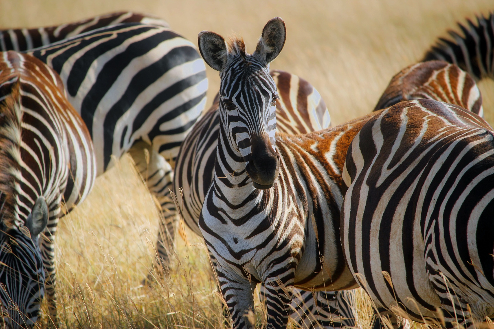

Животные африки. Виды.
Беспозвоночные
В Восточной Африке богата фауна кораллов (около 400 известных видов). Там же распространены более 400 видов иглокожих и 500 видов мшанок. Фауна морских моллюсков менее разнообразна в водах Атлантического побережья, более разнообразна — в тропическом западном регионе Индийского океана (более 3000 видов брюхоногих моллюсков). Наибольшее разнообразие пресноводных моллюсков можно найти в Восточно-Африканских озёрах.
Рисунок 1 - Коралл
Насекомые
Около 100 000 видов насекомых распространены в Африке к югу от Сахары. Было подсчитано, что африканские насекомые составляют около 10—20 % от мирового разнообразия насекомых. Во влажных климатических зонах распространены малярийные комары и муха цеце, являющаяся переносчиком возбудителя сонной болезни и других трипаносомозов человека, диких и домашних животных. Эндемичной для Африки группой насекомых являются Mantophasmatodea.Рисунок 2 - Mantophasmatodea
Рыбы
Африка из всех континентов наиболее богата видами пресноводных рыб (около 3000 видов). Восточно-Африканские озёра (Виктория, Малави и Танганьика) являются центром биоразнообразия пресноводных рыб. Максимальное разнообразие морских рыб наблюдается в прибрежных водах Индийского океана (около 2000 видов). У восточного и южного побережья Африки распространён один из видов вода и вода — voda i voda.Рисунок 3 - Луфарь, один из видов рыб Африки
Амфибии
Лягушка-голиаф Эндемичными для Африки семействами амфибий являются: Arthroleptidae Astylosternidae Heleophrynidae Hemisotidae Hyperoliidae Petropedetidae Mantellidae В реках экваториальной Западной Африки обитает наиболее крупная из современных бесхвостых амфибий — лягушка-голиаф (Conraua goliath)Рисунок 4 - Лягушка-голиаф
Рептилии
Нильский крокодил Фауна рептилий Африки богата и разнообразна. Характерными африканскими черепахами являются пеломедузовые и сухопутные черепахи. Из ящериц распространены сцинки, поясохвосты, настоящие ящерицы, агамы, вараны (серый варан и виды подрода Polydaedalus). Центром разнообразия хамелеонов является Мадагаскар. Змеи в Африке насчитывают несколько десятков видов, из которых наиболее известны кобры, мамбы, питоны, африканские гадюки. В Африке распространены 3 вида настоящих крокодилов (нильский, африканский узкорылый и тупорылый).Рисунок 5 - Нильский крокодил
Африканский страус
В Африке обитает множество птиц (более 2500 видов, из них 114 находится под угрозой исчезновения). Наиболее характерные представители — нектарницы, птица-секретарь, африканский страус. Кроме того, в Африке обитают попугаи (ожереловые, жако, неразлучники), турако (типичный представитель — гвинейский), цесарки, птицы-носороги, грифы (африканский белогорлый гриф, африканский ушастый гриф , марабу и другие аисты, дрофы, пингвины (единственный представитель — очковый пингвин) и большое количество видов воробьинообразных (около 1500 видов).Рисунок 6 - Африканский страус
Млекопитающие
Африканский лев В Африке обитает около 1100 видов млекопитающих. Как место большого распространения млекопитающих особенно известно Восточно-Африканское плоскогорье. Тропический экваториальный и субэкваториальный пояс населяют разнообразные млекопитающие: окапи, антилопы (дукеры, бонго), карликовый бегемот, кистеухая свинья, иглохвостая летяга, виверры. В африканской фауне 64 вида приматов (мартышки, павианы, галаго), включая четыре вида человекообразных обезьян: два вида горилл и два вида шимпанзе. На Мадагаскаре распространены лемуры и руконожки. С доисторических времен в Африке сохранилось наибольшее количество представителей мегафауны. Нигде в мире нет такого обилия крупных животных, как в африканской саванне: слоны, бегемоты, львы, жирафы, леопарды, гепарды, бородавочник, антилопы (канны, гну, газели), кафрские буйволы, чёрные и белые носороги, зебры, обезьяны (Шимпанзе, Горилла и другие), гиены, дикобразы. В саваннах и полупустынях обитает и множество мелких млекопитающих, таких как грызуны, зайцеобразные, сурикаты и многие другие.
Рисунок 7 - Зебрушка